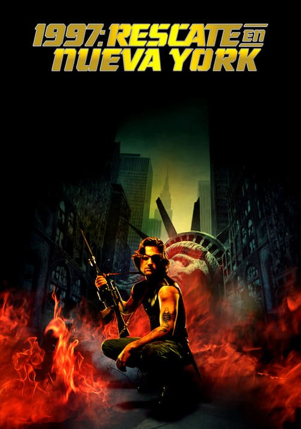

1997: Rescate en Nueva York (1981)
Sinopsis Rápida
En un futuro distópico, Nueva York es una prisión infernal. Un convicto condenado a muerte tiene la única oportunidad de lograr su libertad: rescatar a la hija del presidente, secuestrada en la peligrosa ciudad.
Sinopsis Detallada
1997: Rescate en Nueva York nos sumerge en un panorama apocalíptico donde Manhattan es una prisión superpoblada, controlada por una despiadada élite. Snake Plissken, un antihéroe cínico y letal, es contratado para una misión suicida: rescatar a la hija del presidente, secuestrada en la ciudad. Con el tiempo en su contra y la muerte acechando en cada esquina, Plissken deberá navegar por un laberinto de peligros para completar la misión y, quizás, encontrar un poco de redención. La película es una obra maestra del cine de acción, con una estética oscura y una atmósfera tensa que mantiene al espectador al borde de su asiento.
¿Por qué tenés que verla?
- Una historia de acción trepidante y sin respiro en un escenario post-apocalíptico.
- La icónica interpretación de Kurt Russell como Snake Plissken y la atmósfera única creada por John Carpenter.
- Su influencia en el cine de acción y ciencia ficción posterior, estableciendo un nuevo estándar en la creación de antihéroes.
- Un guion inteligente y una crítica social velada a la sociedad contemporánea.
Idea Extra
Análisis del impacto cultural y estético de 1997: Rescate en Nueva York en el cine de acción y ciencia ficción posterior, incluyendo su influencia en videojuegos y otras obras.